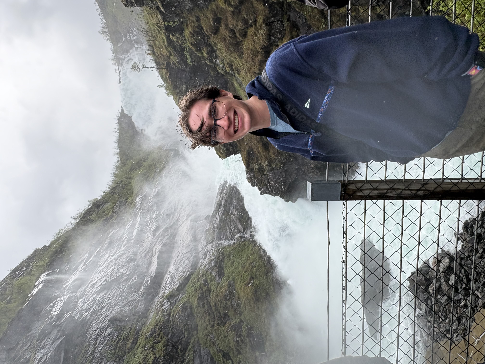
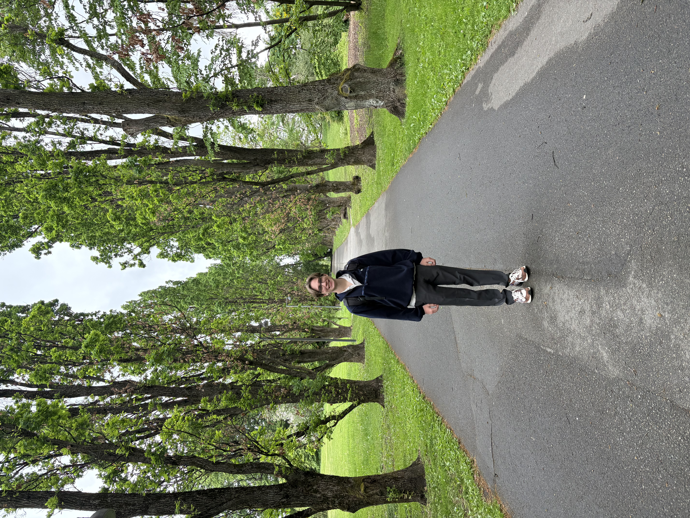
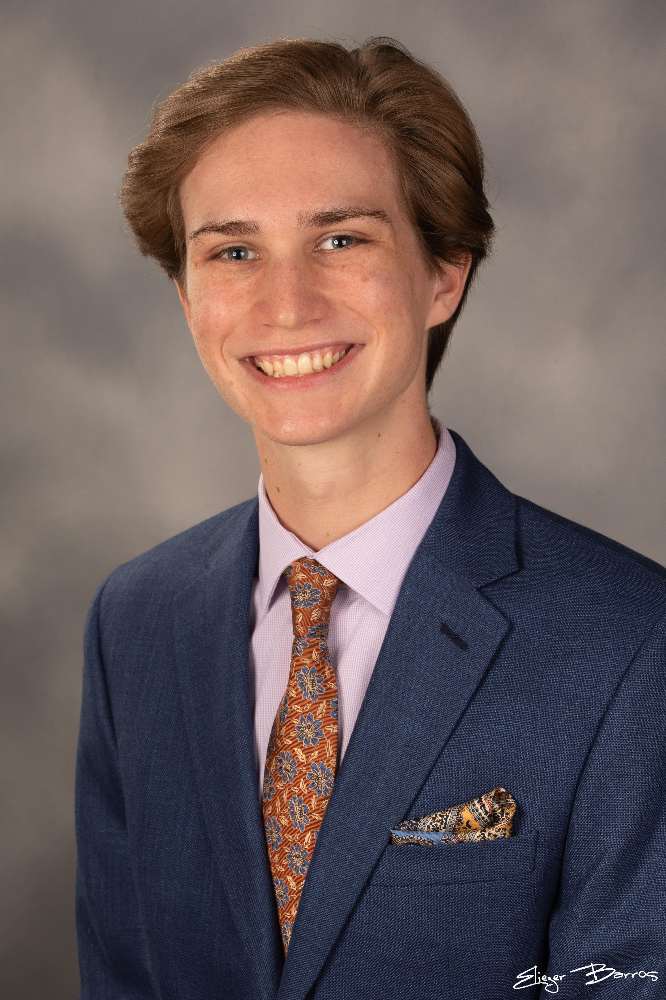
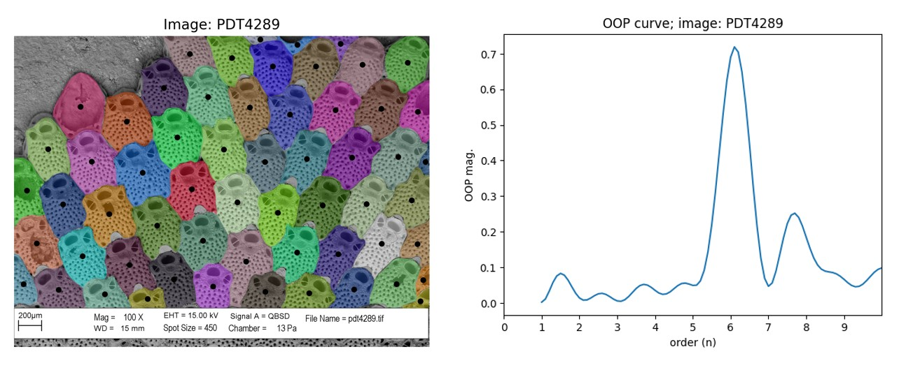

Honors Physics Student | Biophysics Researcher


"I too am not a bit tamed, I too am untranslatable, I sound my barbaric yawp over the roofs of the world." - Walt Whitman, "Song of Myself" (1855)
My name is Andrew (Drew) Harwood and I am an undergraduate physics student in the honors program at the University of Florida. While my primary academic focus is physics and biophysics research, I engage deeply with music and poetry. I have played clarinet in the university's clarinet choir, symphonic and concert bands, as well as steel pan in the Sunshine Steelers Steel Band. An introductory poetry course sparked my interest, and now I am in the process of revising two poems with the goal of publication in a university journal. I believe that the diversity of my academic experience - my willingness to engage with and learn about many subjects - has developed the nuanced perspective I bring to biophysics.
I am interested in understanding all aspects of the world around me - from quantum to biological systems. Through my research experience in biophysics, I have experienced firsthand the fundamental connections between different areas of physics. Applying mathematical techniques from solid state physics to biological systems has allowed us to quantify traits which have been, thus far, treated qualitatively. I have also experienced the importance of interdisciplinary research; the tools I bring to biology from physics have developed into new and robust methods, and thus, alternate ways of thinking about the same biological systems. While my current research has a biophysics flavor, I am generally interested in condensed matter and quantum systems. Furthermore, as we press forward in the age of AI, I use convolutional classification neural networks in my research.

Bryozoans are a diverse phylum of colonial marine invertebrates commonly found encrusting rock surfaces. They are of great interest to biologists because of their extensive fossil record dating to the Jurassic period, which shows enormous species diversity. UF’s Museum has a significant collection of these samples, yet many remain unidentified since special expertise and tedious labor is required. Recent efforts have focused on developing AI-based automated methods for species identification, which typically only analyze single objects within images. However, in colonial organisms like bryozoans, the spatial arrangement of individuals (called zooids) in a colony provides critical information for species identification. Currently, there are no quantitative methods for characterizing a colony’s spatial morphology. To address this, we use methods from solid-state physics to characterize the lattice structure of bryozoan colonies, enabling AI algorithms to identify spatial structure at the population level.
I use Python, along with its many opensource libraries, to analyze digitized bryozoan samples. My responsibilities are to develop new ideas and methods for quantitative analysis of bryozoans. Thus far I have written code for Fourier lattice analysis, Fourier image analysis, Voronoi and centroidal dual mesh partitions, and orientational order parameters. It is my job to understand the technicalities of translating our theoretical methods into functional code that can be applied digitized bryozoan samples.
Bachelor of Science, Honors Program
Physics